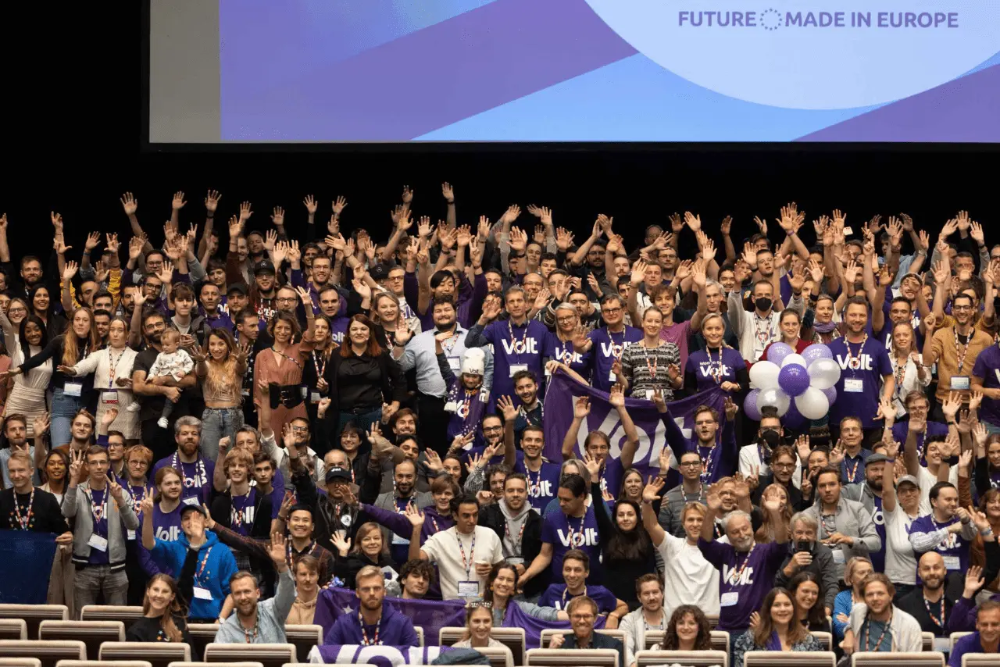
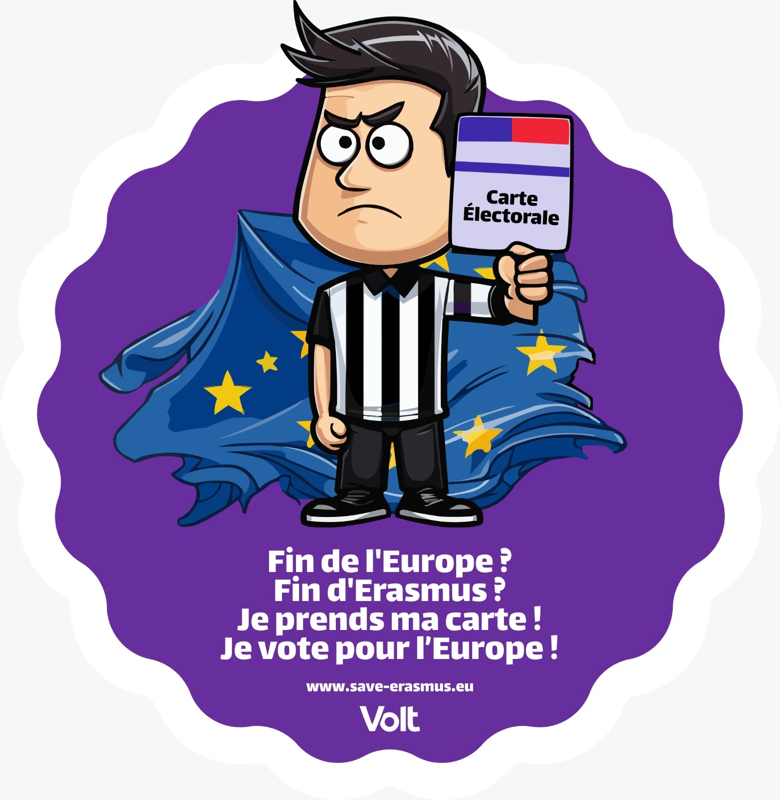
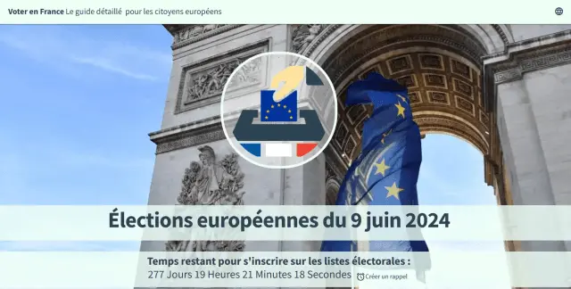

Bonjour ! Je m'appelle Sven Franck et je suis tête de la liste de Volt France aux élections européennes de 2024. Ici, vous pourrez en apprendre davantage sur moi-même et sur mes priorités politiques, sur les raisons pour lesquelles je suis membre de Volt et sur ce que je fais dans la vie. Suivez ma campagne et si vous pensez que je pourrais être un bon représentant de vos idées au Parlement, votez pour moi !
L'une des forces de l'Europe réside dans la diversité de nos PME. Un Small Business Act réservera une part des marchés publics aux PME, garantira que la législation adoptée au niveau européen et national ne désavantage pas de manière disproportionnée les PME et trouvera un équilibre entre la normalisation, l'ouverture et l'interopérabilité. L'Europe doit trouver son propre récit économique en combinant la diversité, la durabilité et la compétitivité. Assurons-nous que les PME montrent la voie.
Le droit de vote pour les citoyens mobiles d'Europe
Il y a plus de 15 millions de citoyens de l'UE mobiles vivant et travaillant dans un autre État membre de l'UE que leur pays d'origine. En vivant l'idée européenne, ils soutiennent indirectement le nationalisme, car ils ne peuvent pas voter à toutes les élections dans leur pays de résidence et sont souvent exclus ou ont peu d'incitation à voter dans leur pays d'origine. Nos démocraties ont besoin de ces voix, travaillons donc vers le suffrage universel pour les citoyens mobiles de l'UE.
La politique étrangère de l'Europe est aujourd'hui une cacophonie de 27 États membres et de la Commission, chacun ayant ses propres objectifs. À un moment où il ne suffit plus de préserver la paix et la stabilité au sein de l'Union européenne, il devient essentiel pour l'Europe de développer et de défendre une véritable politique étrangère qui devrait également viser à préserver la paix et la stabilité en déhors de l'Union - tout en adhérant aux valeurs que nous attendons des autres pays. Il est temps pour une politique étrangère européenne.
La fraude en ligne est un problème qui touche à la fois les jeunes et les personnes âgées et qui ne fera qu'augmenter avec une technologie plus sophistiquée. La solution est relativement simple et devrait impliquer de rendre les commerçants en ligne et les institutions financières responsables de signaler les transactions présentant un risque élevé de provenir des arnaques et des escroqueries (comme votre grand-mère envoyant 25 000 euros au Ghana). Protégeons notre population vulnérable !
Notre système démocratique a besoin d’être modernisé. Au niveau européen, l'unanimité au Conseil de l’Union européenne empêche les modifications des traités, la Commission européenne ne peut être tenue responsable de ses activités et le Parlement, en tant que seul organe législatif démocratiquement élu, n'a pas le droit de proposer des lois. Nous sommes encore loin d'une Europe fédérale et démocratique.ans les États membres, la plupart des élections restent nationalistes. Elles excluent des scrutins et des décisions importantes non seulement les citoyens des autres États membres de l'UE, mais aussi les citoyens britanniques et d'autres groupes. Tant que nos élections nationales resteront nationales, nous ne devrons pas nous étonner que le projet européen ne progresse pas. L'Europe est centrée sur les chiffres depuis plus de 60 ans. Il est temps de parler de la démocratie européenne.
Nous ressentons lentement les effets du changement démographique en Europe. Alors que nos baby-boomers prennent leur retraite et que les taux de natalité restent bas – oui, même ici en France –, nous devrions avoir de nombreuses opportunités pour trouver un travail de qualité, des logements abordables pour fonder une famille, une bonne prise en charge de nos personnes âgées... Pas du tout. La réalité est brutale : aujourd'hui, on voit se multiplier les emplois mal payés et sans intérêt, voire l’absence de travail, de longs trajets domicile-travail ou des retours chez ses parents pour vivre, et ce n'est pas seulement nos personnes âgées qui ont du mal à joindre les deux bouts.
L'Europe se targue d'être unie dans la diversité, et notre écosystème économique répond à cette promesse. Depuis longtemps, la réglementation européenne garantit que les citoyens bénéficient de cet écosystème, offrant de meilleurs produits, plus d'innovation et des prix compétitifs. Cependant, notre propre réglementation commence à réduire nos avantages et à entraver nos possibilités de développer une autonomie stratégique et un modèle économique véritablement européen, distincts des États-Unis et de la Chine. Nous risquons de perdre des emplois et d’amoindrir les recettes fiscales qui financent nos systèmes de protection sociale. Les institutions de l'UE doivent désormais soutenir notre écosystème économique et encourager sa capacité d'innovation et d'excellence, afin que nous puissions non seulement gérer la transition vers une économie verte, mais aussi la promouvoir à l'étranger.
Nous sommes actuellement témoins du changement climatique, qui montre lentement son visage redoutable avec une augmentation de 1,5 degré de la température mondiale. Augmentation que nous essayons d'éviter, mais face à laquelle nous sommes encore loin de fournir les efforts nécessaires, en dehors des éternelles déclarations de bonnes intentions en pourcentage. Nous allons inévitablement nous heurter au mur, la question est de savoir dans quelle mesure nous pouvons ralentir et nous préparer à l'impact. La population mondiale devrait décliner après 2050, mais alors que notre planète s’apprête à accueillir 10 milliards d'habitants, il ne reste quasiment plus de temps pour éviter un avenir catastrophique. Nous serons confrontés à des décisions difficiles à l'avenir, des questions auxquelles nous pouvons plus facilement répondre en tant qu'Union européenne.
Je suis membre de Volt, un mouvement européen et parti politique avec plus de 25 000 membres dans 31 pays européens. Avec nos représentants élus au niveau européen, national et local, nous partageons un programme commun, dont l'un des piliers est de réformer l'Union européenne en une Europe fédérale qui soit une union non seulement économique, mais aussi démocratique et sociale. Changer la politique pour le mieux est un projet à long terme et vous pouvez nous aider à nous rapprocher de cet objectif. En nous rejoignant. En nous soutenant. Et en votant pour Volt lors des élections européennes !

Levez la main si vous voulez changer la politique.
Mes projets

save-erasmus.eu
À travers le continent, l'extrême droite appelle à la dissolution de l'Union européenne. Cette fin de l'Europe signifiera également la fin d'Erasmus. Prenons nos cartes électorales et votons pour l'Europe pour sauver Erasmus ! Plus d'informations

votefrance.eu
Il y a entre 1,5 million et 2 millions de citoyens de l'Union européenne vivant en France, issus d'autres États membres. Mobilisons-nous pour les aider à s'inscrire afin de garantir que l'extrême droite ne remporte pas la majorité en 2024. Plus d'informations